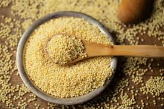
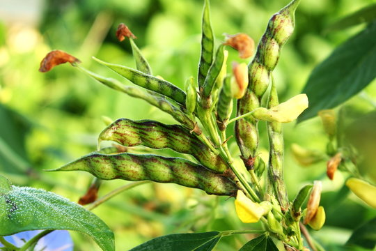

Millets
Drought-resistant and ideal for dry regions.
More Info
- Sowing Time: June to July
- Fertilizers: 40 kg N + 20 kg P per hectare
- Water Requirement: 250–300 mm total
- Growth Duration: 90–100 days
- Harvest Time: September to October
- Notes: Ideal for dryland farming and low-input agriculture.

Cotton
Thrives in warm temperatures and black soil.
More Info
- Sowing Time: April to May
- Fertilizers: 100 kg N + 50 kg P + 50 kg K per hectare
- Water Requirement: 700–1200 mm total
- Growth Duration: 150–180 days
- Harvest Time: October to December
- Notes: Drip irrigation improves yield and water efficiency.

Sorghum (Jowar)
Heat-tolerant and nutritious cereal crop.
More Info
- Sowing Time: June to July
- Fertilizers: 80 kg N + 40 kg P per hectare
- Water Requirement: 400–500 mm total
- Growth Duration: 100–120 days
- Harvest Time: September to October
- Notes: Used for food, fodder, and biofuel.

Bajra
Grows well in arid and semi-arid regions.
More Info
- Sowing Time: June to July
- Fertilizers: 60 kg N + 30 kg P per hectare
- Water Requirement: 300–350 mm total
- Growth Duration: 80–90 days
- Harvest Time: September
- Notes: Excellent for dryland nutrition and fodder.

Groundnut
Requires warm climate and sandy soil.
More Info
- Sowing Time: June to July
- Fertilizers: 20 kg N + 40 kg P + 40 kg K per hectare
- Water Requirement: 500–600 mm total
- Growth Duration: 110–120 days
- Harvest Time: October
- Notes: Oilseed crop with nitrogen-fixing benefits.

Tur (Pigeon Pea)
Legume suited for dryland farming.
More Info
- Sowing Time: June to July
- Fertilizers: 20 kg N + 40 kg P per hectare
- Water Requirement: 600–800 mm total
- Growth Duration: 150–180 days
- Harvest Time: November to December
- Notes: Important pulse crop with deep roots and drought tolerance.

Sesame
Oilseed crop tolerant to heat and drought.
More Info
- Sowing Time: June to July
- Fertilizers: 30 kg N + 20 kg P per hectare
- Water Requirement: 300–400 mm total
- Growth Duration: 90–100 days
- Harvest Time: September to October
- Notes: Valuable for edible oil and traditional medicine.